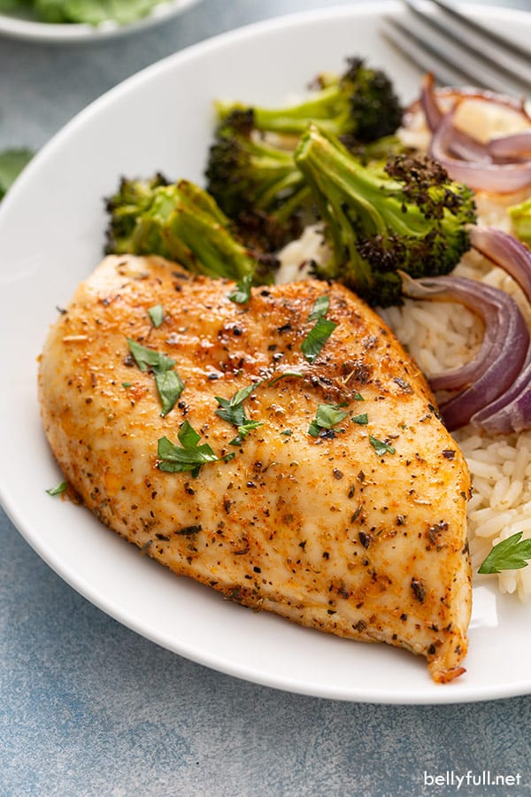

Cooked Chimkin

Some delicious cooked chimkin here, yum!
Ingredients you need
- chicken breast
- salt
- pepper
- paprika
- viniger
- olive oil
Steps for preparaton
- Heat up pan over medium heat
- put butter/oliveoil before the pan heats up
- While the pan is heating up, put chicken in a bowl and mix all ingredients
- with either a spatual or hands(preferred) mix until the ingredients are thoroughly mixed
- cook each side for roughly 3-5 mins until golden crisp
- yummer chicken!
Return to main menu